This is my Portfolio Page!
1.1.9 Project: Eggdog Simulator

This is our 1.1.9 project. We made an eggdog which is essential just a picture of a dog that been edited into the shape of an egg.
We used a beach wallpaer as our background to make eggdog stand out more on the screen.
We first coded so there's an eggdog in the middle serving the purpose of spanwing another eggdog that is controllable.
We maded so it can move left or right on command using the left and right arrow button on the keyboard.
We designed a game that is similar to the snake game. We replace the replace with a baby duck and replaced apple with variaty of foods.
The goal is to get as many food as possible while not colliding with the wall and the ducks behind it. However, if you do hit the wall
or the ducks behind it the game will reset and the duck will be centered back to the middle of the screen.The backgrounds are all
randowmized and so is the different types of food.
Animal Clicker Game
This project is called Animal Clicker. It is a points gathering game where the more points the better. You start off by clicking the
chick to store points into the scoreboard, when you've gathered enough points the elephant icon will become solid then you can start
clicking on the elephant which auto generates one point/sec and the same goes for the puppy, only it generates 2 points/sec.
Project 3.1.6 Project Rover Phone Home
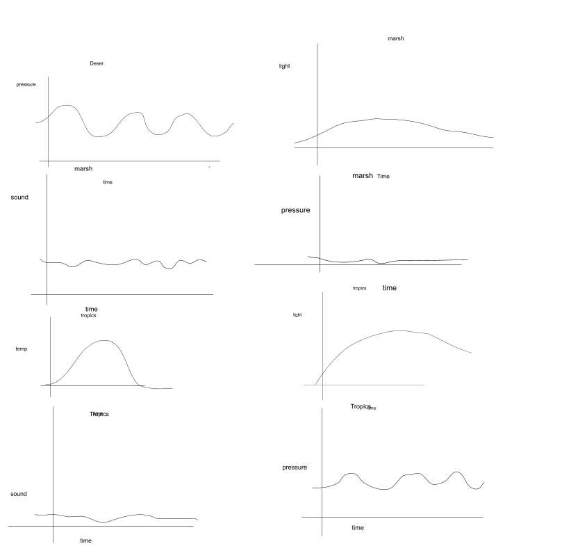
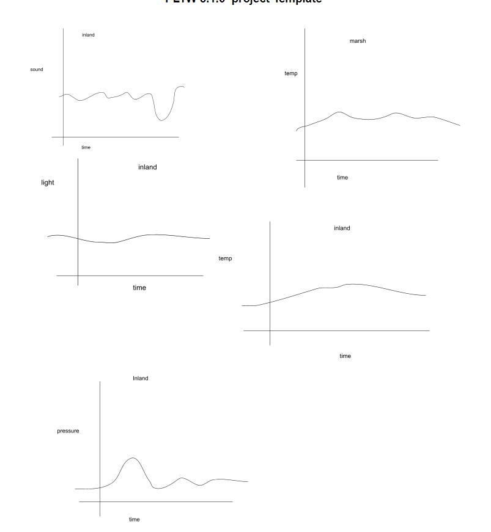
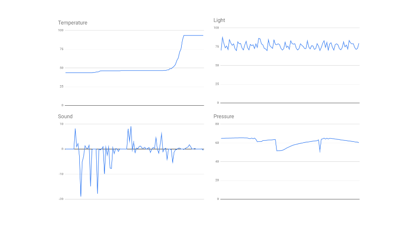
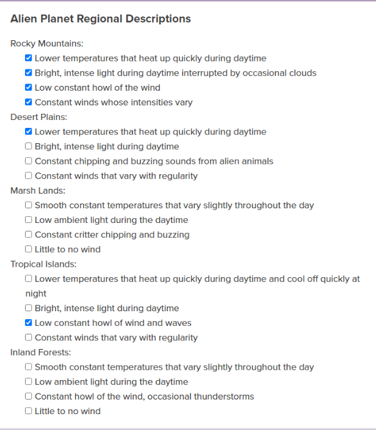
We thought that the data was from the rocky mountains. This is because the temperature starts off relatively cool and heats up quickly
and stays warm. This pattern follows the same pattern of the rocky mountains. The light intensity is very high, but is disrupted
frequently, which leads us to believe that maybe clouds were causing the intensity of light to decrease every once in a while.
The other regions did not have this feature. The sound was relatively quiet, ranging from =20 to 10 units, so we assumed that there
was some sort of low and constant type of sound going on. Lastly, the pressure seemed pretty constant with slight variation, so we
believed that the wind would have slight variation but to be constant.
Project 3.2.4 Project Honey as an Indicator
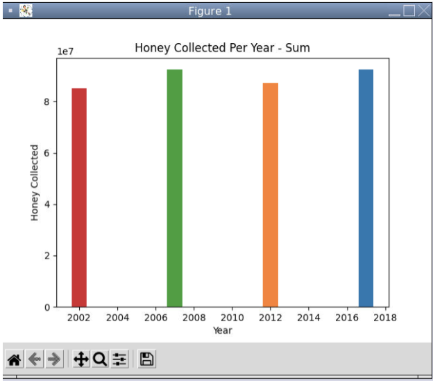
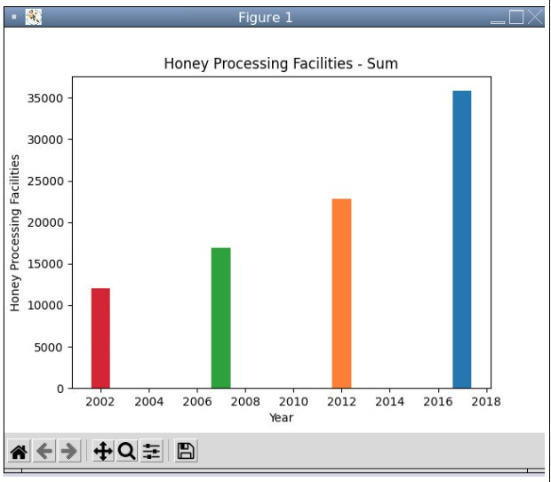
The project is about a collected information on bee colony decline. Our goal is to study and extracted information from a large group
of data to see if the effect of bee colony health on honey growth. The first bar graph shows the decrease of honey production over the
year and the second bar graph shows the numbers of facilities that processes honey in the United States over the year. As a result, the
increase in bee colony made the honey production more consistant.
Project 4.1.4 understanding Complex Systems
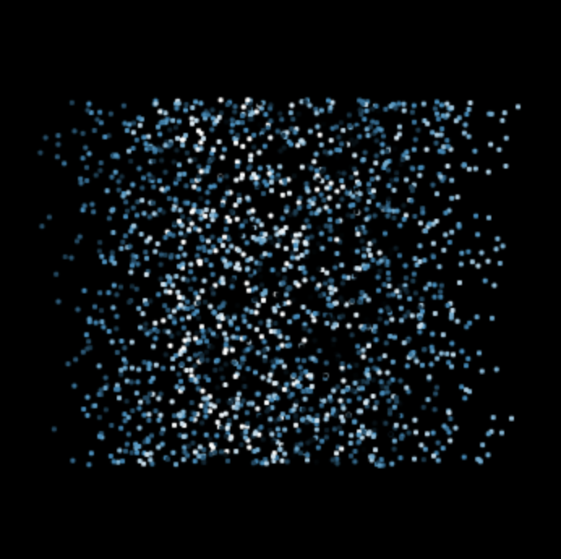
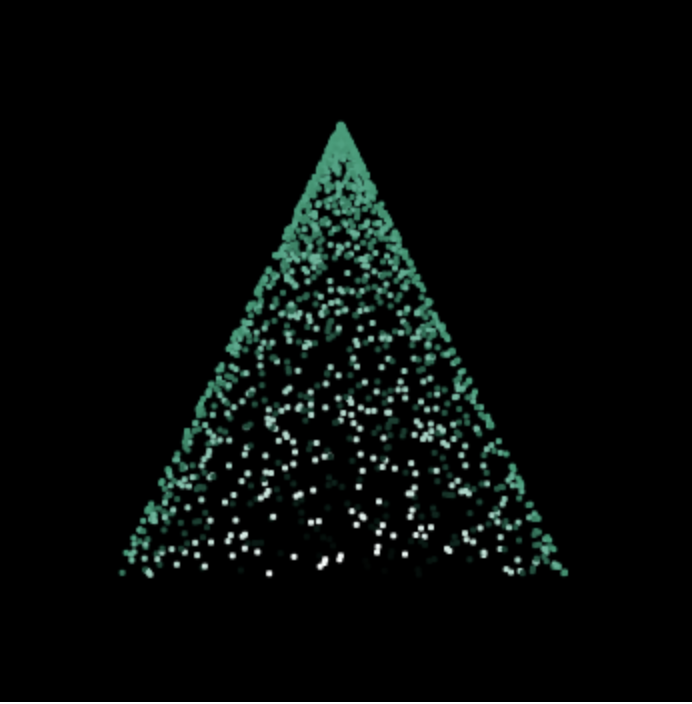
In this project we explored two comeplex systems. The two images above are two different simulations that we came up with. The simulation
is called 3D Solids and it randomly form solid shapes from particles within simulation. In our case the shape was a circle and a rectangle.
After that, we compared our simulation with another group of our findings and present it to them.
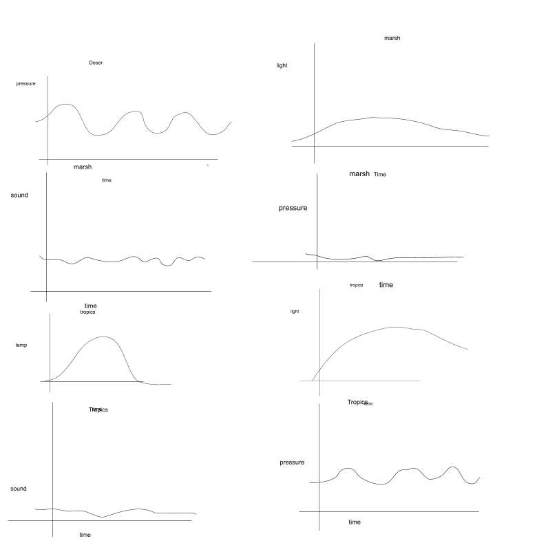
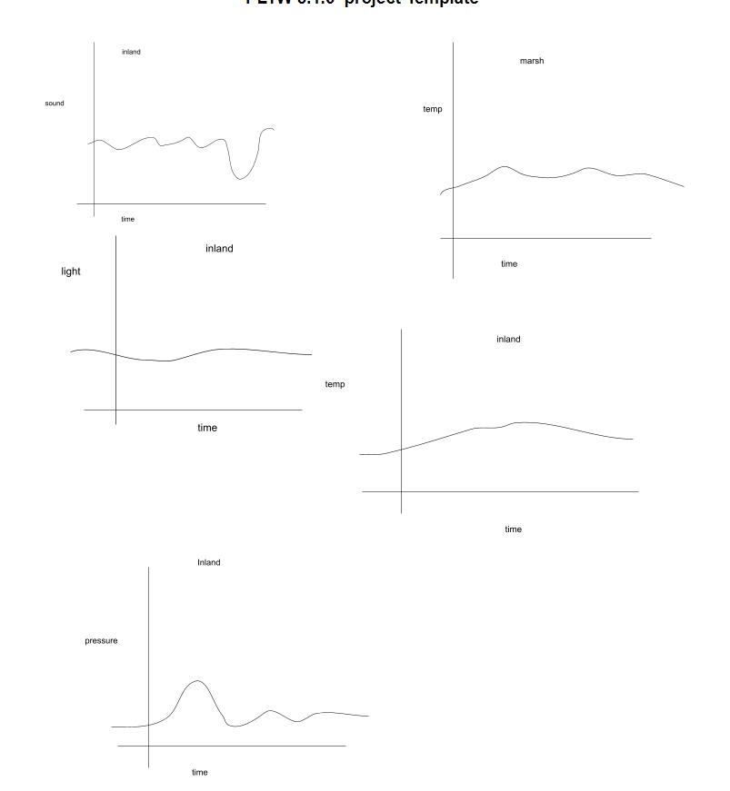
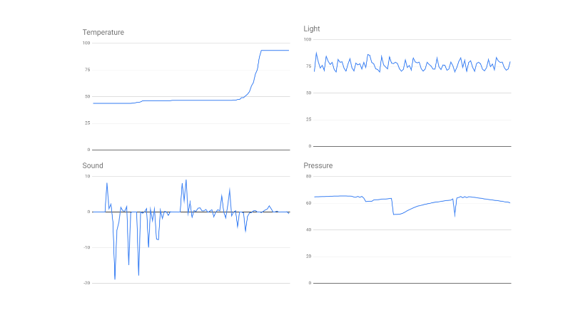
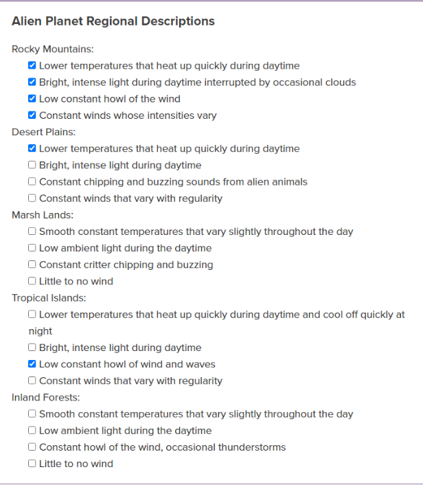
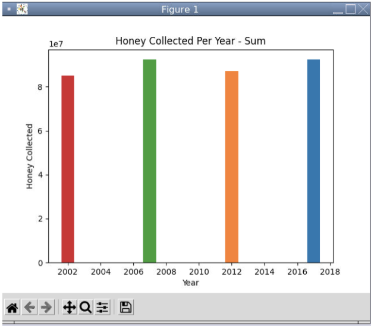 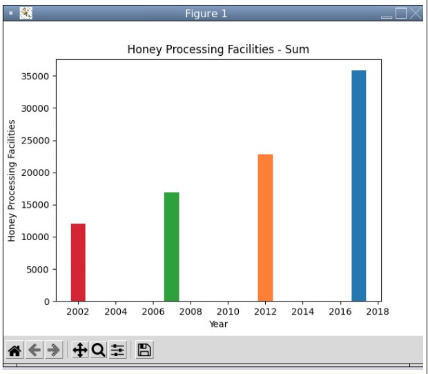
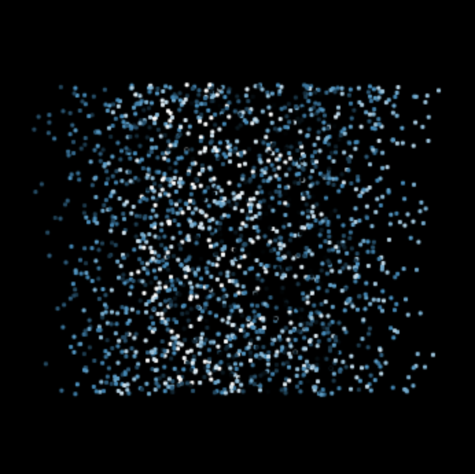 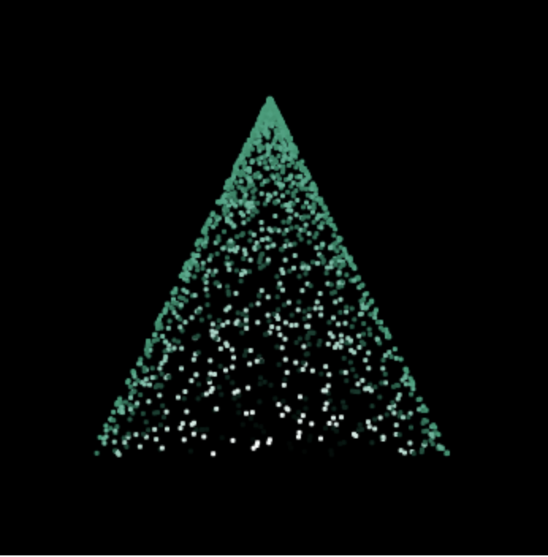